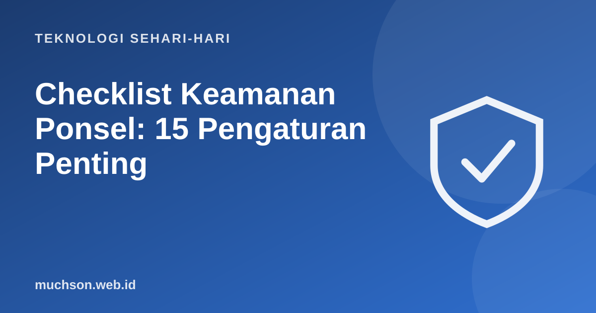

Beranda › Artikel › Teknologi Sehari-hari
Teknologi Sehari-hariChecklist Keamanan Ponsel: 15 Pengaturan Penting
Ponsel menyimpan hampir seluruh hidup digital Anda: pesan, foto, perbankan, kata sandi. Sebagian besar perlindungannya tersedia gratis di pengaturan, hanya perlu diaktifkan. Berikut daftar yang bisa Anda selesaikan dalam setengah jam.

Lima belas pengaturan penting
Bila ponsel hilang
- Gunakan "cari perangkat" untuk melacak, mengunci, atau menghapus dari jarak jauh.
- Hubungi operator untuk memblokir kartu SIM.
- Ganti kata sandi akun penting dan keluarkan perangkat dari daftar akun.
- Hubungi bank untuk memblokir akses mobile banking dan dompet digital.
- Laporkan ke pihak berwenang bila diperlukan.
Tanya jawab
Apakah iPhone lebih aman dari Android?
Kedua platform menyediakan perlindungan yang baik bila diperbarui dan dikonfigurasi benar. Kebiasaan pengguna sering lebih menentukan.
Apakah perlu aplikasi antivirus?
Fitur keamanan bawaan dan toko resmi sudah banyak melindungi. Antivirus tambahan opsional, bukan pengganti kebiasaan baik.
Seberapa penting memperbarui ponsel?
Sangat penting. Pembaruan menambal celah keamanan yang bisa dieksploitasi.